Memo
Haus
From Archive To Participatory Experience
A participatory, time-layered spatial memory archive for Wolfsburg.
Parthasarathy Muralidharan, M.Sc IUDD, Summer Semester 2026
Bauhaus-Universität Weimar, Weimar, Germany
Prompt City, Wolfsburg Urban Vision
The Problem
A visible image. A hidden identity.
Wolfsburg is known worldwide for Volkswagen, mobility, and modern planning. But people have lived ordinary, meaningful lives here for generations: arrivals, work, childhoods, family, waiting, walking. That side rarely becomes part of the city's visible identity.
Wolfsburg's identity needs to grow from an industrial image into a living one.
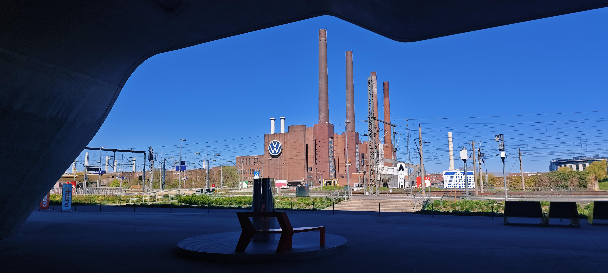
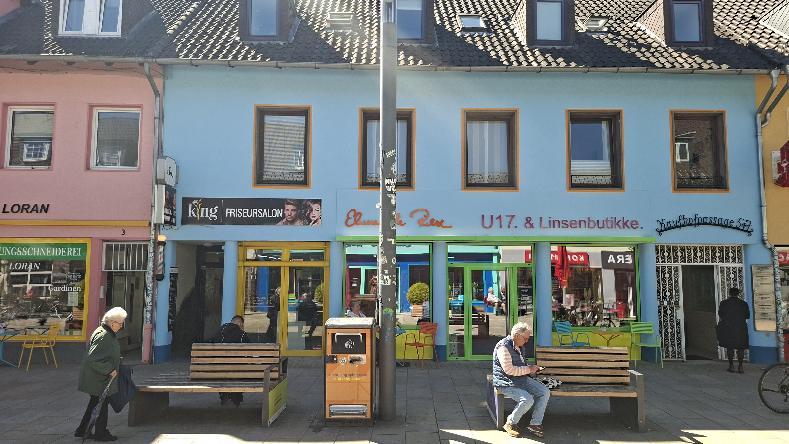
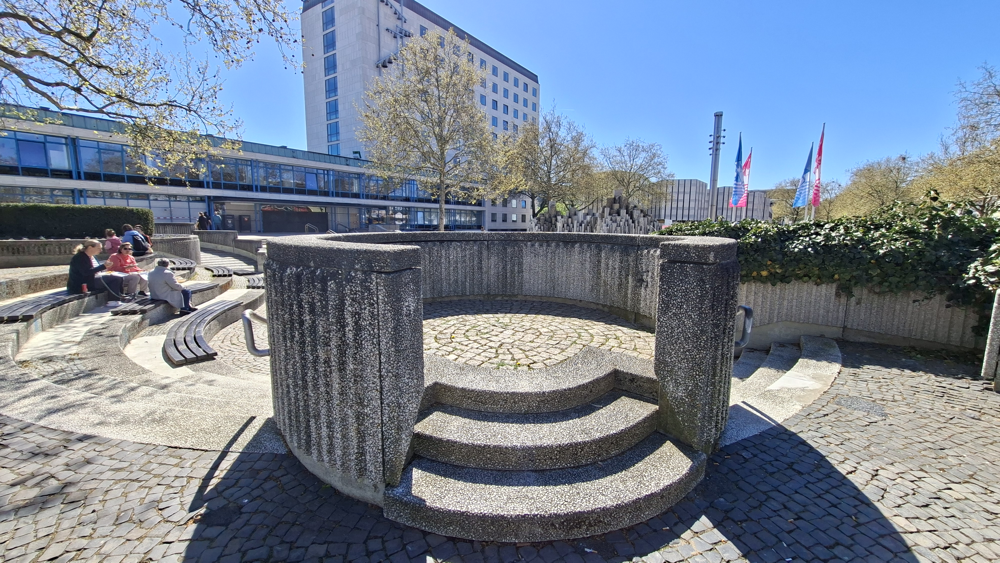
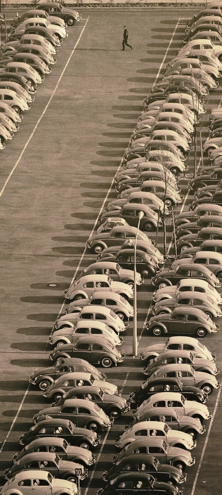
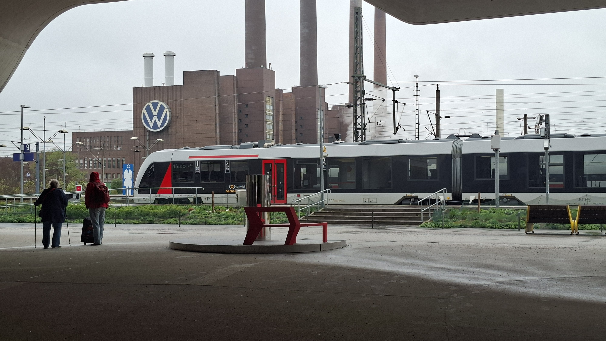
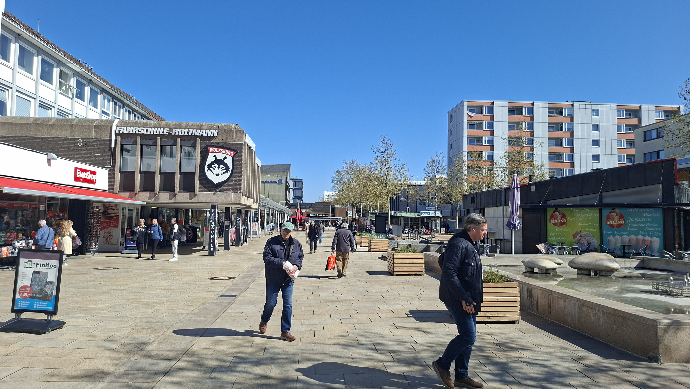
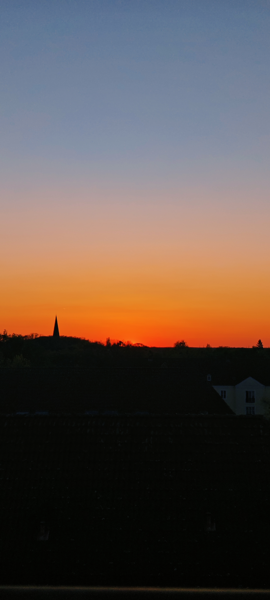
Where The Idea Started
Bottling Memories.
The idea started with a bottle. Not as a nostalgic object, but as a simple example of something that holds a fragment of a moment and keeps it from disappearing.
Memo-Haus imagines the city the same way: a living archive that holds scattered memories, photographs, voices, stories, routes, waiting moments, and everyday experiences that are usually invisible in public space.
These fragments are collected from people, anchored to specific locations in Wolfsburg, and reconstructed as spatial 3D experiences, preserved like an archive, but experienced as part of the city's shared identity.
Memo-Haus preserves scattered memories as a living spatial archive.
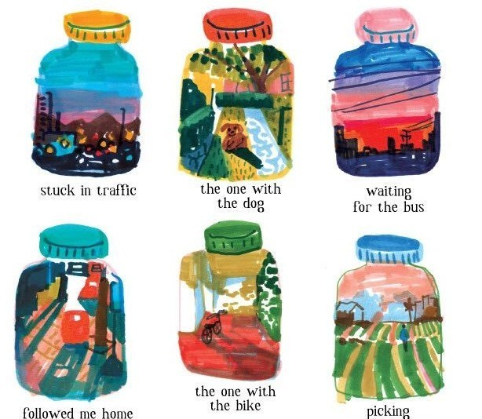
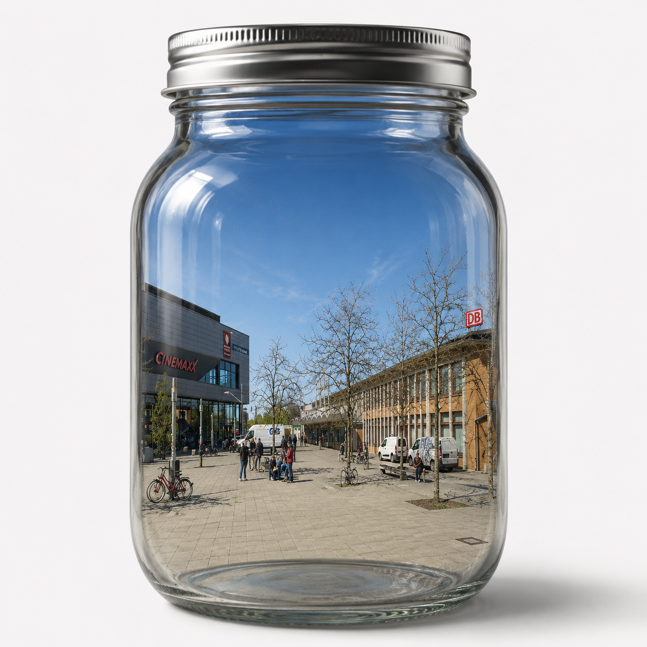
The Concept
Memory becomes a living archive.
Memo-Haus collects the everyday memories of Wolfsburg: arrivals, work routines, childhoods, family stories, waiting, walking, the ordinary moments usually missing from the city's public image.
Each photo, voice note, and story is tied to a place, a time, and a theme, then rebuilt as a 3D spatial memory using Gaussian splatting.
Inside the pavilion, these reconstructions form a living archive that keeps growing and branching as more memories are added, rather than a fixed collection.
Memo-Haus turns everyday memories into a spatial archive of Wolfsburg's lived identity.
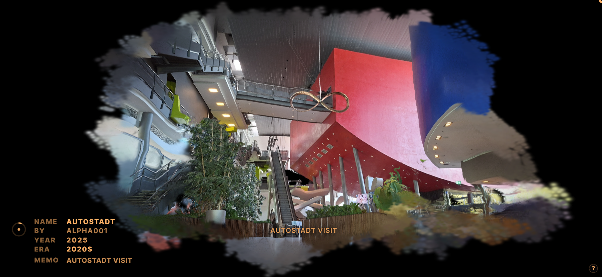
How It Works
Scan. Share. Step inside.
- 01Scan a QR code on site with your phone
- 02Upload a photo, and add a voice note or a short clip of music tied to that place
- 03The backend reconstructs it into a 3D scene
- 04It joins the public display, where particles gather, the memory forms, and dissolves once the next one is chosen
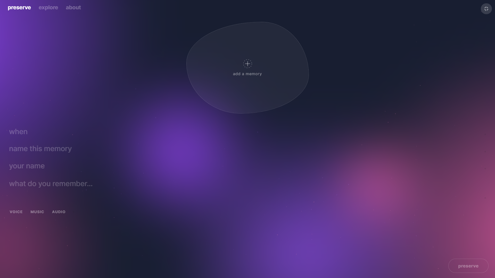
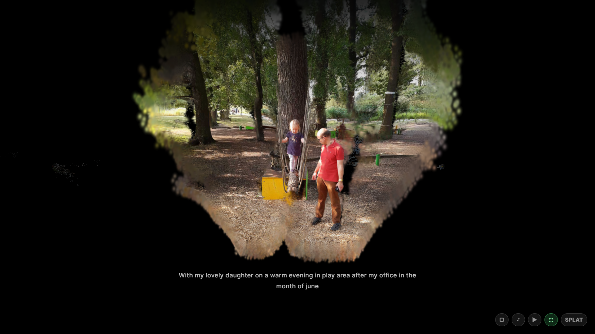
Voice & Sound
A memory isn't just a picture.
Every upload can carry sound too: a voice recorded right there on site, or a piece of music tied to that place and time, trimmed to the exact moment that matters.
Record straight from the phone's microphone, or search for a track and pull up its waveform: drag the two handles to crop it down to up to 60 seconds, preview the exact clip, then attach it.
In the pavilion, that sound becomes spatial. Only the memory you're standing in front of plays out loud, fading in as you approach and back out as you leave. Everywhere else stays quiet, so the space never turns into overlapping noise.
Solving Wolfsburg's Identity Problem
One industrial image. Many lived ones.
Most people know Wolfsburg through Volkswagen, mobility, and modern planning. But underneath that image are quieter memories that exist all over the city and almost never get acknowledged: arriving for the first time, growing up here, starting a first job, waiting for family, feeling lonely, or celebrating at a local festival.
Memo-Haus ties real, contributed memories to exact locations and layers them across a timeline, so a single place, the pavilion site at the start of Porschestraße, can show how its meaning has shifted from one generation to the next. Put together, these scattered personal memories form a shared spatial record, one that surfaces Wolfsburg's everyday lived identity next to its industrial one, not instead of it, but alongside it.
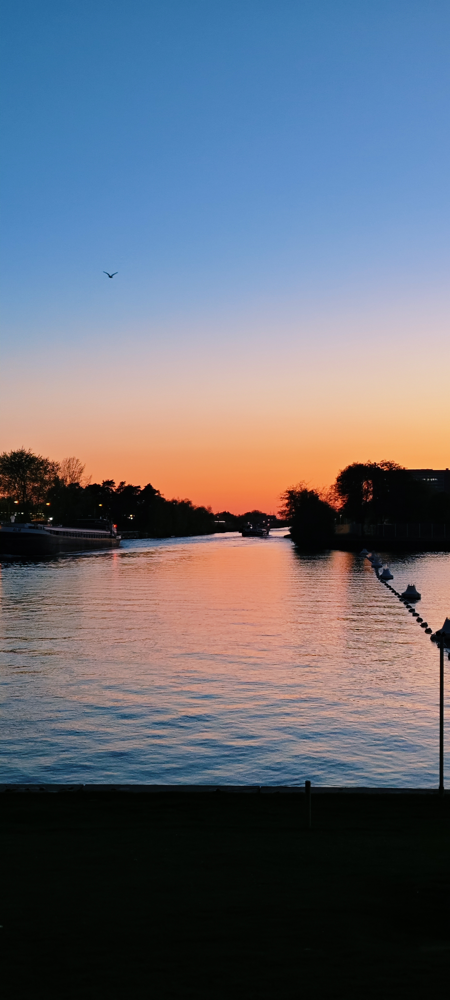
Under The Hood
What's actually running underneath.
One Repo, Three Systems
How it all fits together.
A visitor uploads a photo. The backend reconstructs it into a 3D scene. The viewer shows it. All three pieces live in one repository.
The Site
Right where the city already moves.
The pavilion sits right at the start of Porschestraße, the city's main pedestrian street, at the junction next to the central bus station (ZOB) and a short walk from the Hauptbahnhof.
That position was chosen on purpose. Bus routes converge here, and commuters and shoppers pass through it every day, so the site already carries more footfall than almost anywhere else in Wolfsburg. The pavilion doesn't need to attract an audience; it just needs to meet the one already passing through.
It's also a threshold in a more pointed sense: this is the entrance to a street named after Ferdinand Porsche, the symbolic edge of the city's industrial identity. Placing an everyday-memory pavilion exactly there puts the hidden, lived side of Wolfsburg right at the doorstep of the image that usually overshadows it.
High footfall, a real transit junction, and a symbolic threshold, all in one site.
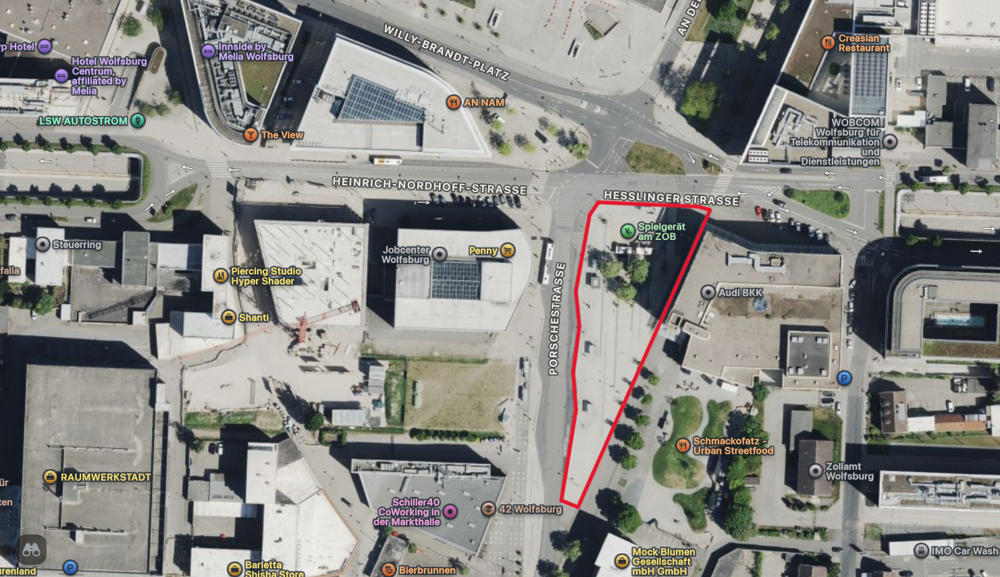
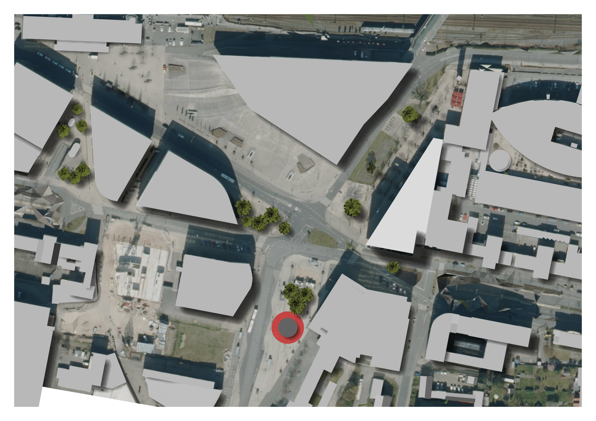
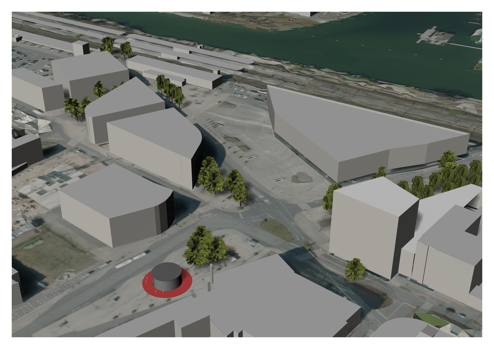
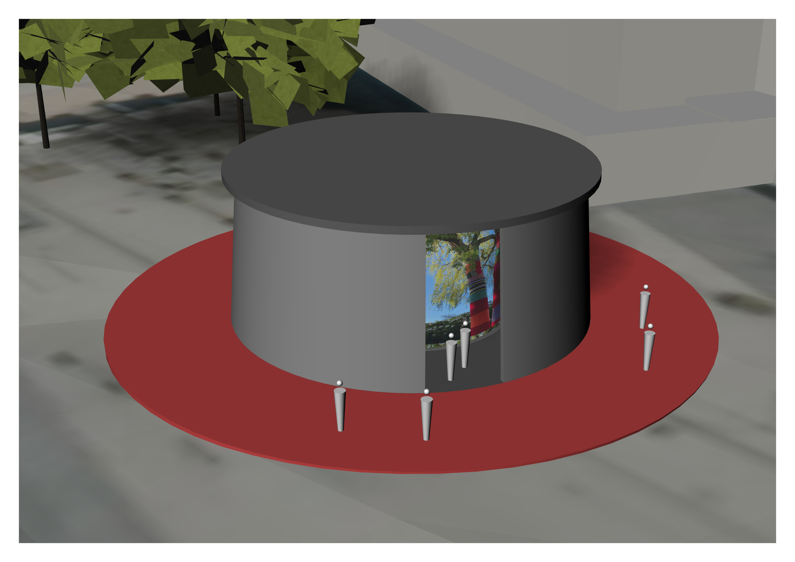
The Pavilion
Where memories come to life.
Memo-Haus is built as a layered memory capsule. The outer shell is a 200mm thick, dark GFRC wall with a blind-perforated surface, holes recessed rather than fully open, so the wall reads as porous from outside while still blocking daylight. Its inner face is lined in matte black acoustic panelling, forming a dark, protective threshold around the pavilion.
Inside that shell, the corridor between the outer wall and the translucent display cylinder is the first part of the experience. Visitors don't reach the memory field immediately; they walk through a dim circular passage where fragments of the display glow faintly through the inner screen's outer surface. The corridor slows them down, separates them from the city outside, and prepares them for the memory chamber ahead.
The inner cylinder itself is curved, laminated, translucent safety glass with an integrated transparent LED mesh and an anti-glare diffusion film. It's the main display surface, showing photos, text, particles, and Gaussian-splatted 3D memory scenes. Because it's translucent, memories can be sensed from the corridor as soft traces, then experienced from inside as a full spatial environment.
At the centre, a steel service core wrapped in vertical timber cladding forms the tree-shaped column, housing the media server, sensors, sound, lighting, and ventilation. Symbolically, the tree roots the memories in Wolfsburg and branches them outward into the glowing display. It also does the structural work of holding up the roof.
The roof is a steel-framed canopy clad in dark fibre-cement, with a black acoustic underside. It shades the interior, hides the technical systems above, and reinforces the pavilion's dark, atmospheric character.
If footfall at this first site proves the idea, the same pavilion doesn't have to stay a one-off. Its cylindrical form is already close to a familiar piece of German street furniture, the Litfaßsäule, advertising columns placed deliberately at the city's busiest corners. Memo-Haus could spread the same way: a small family of these memory columns, each one set down at a high-footfall point across Wolfsburg, rather than a single landmark everyone has to travel to.
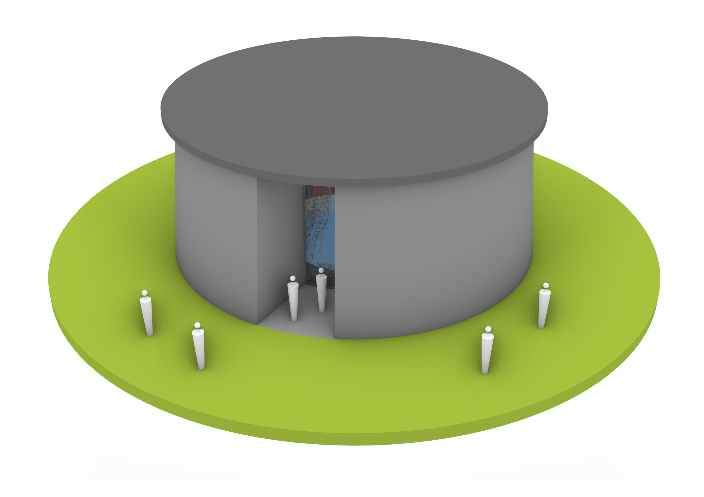
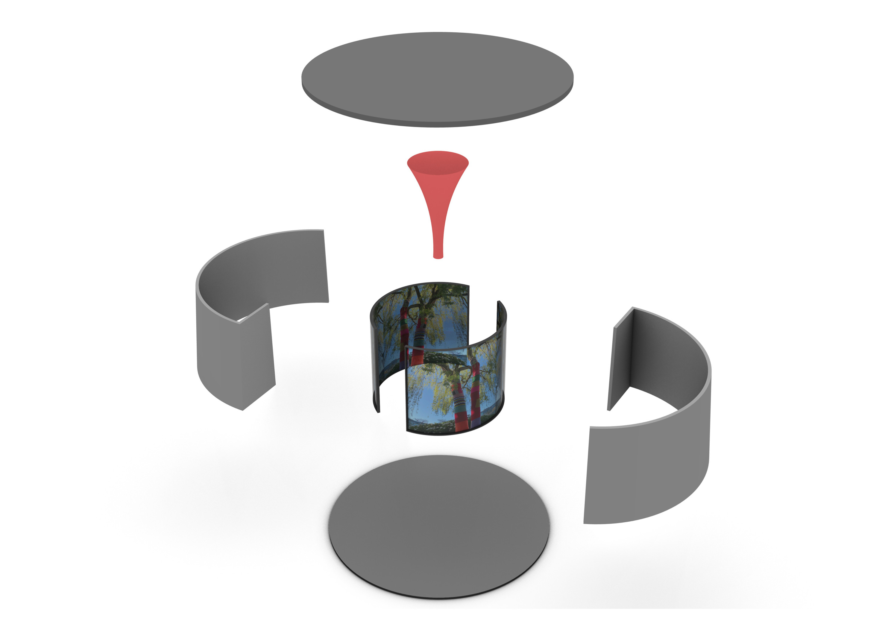
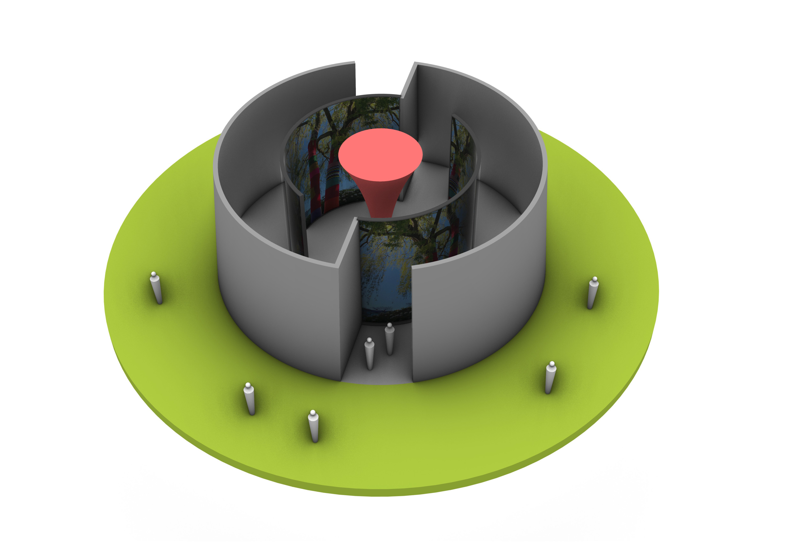
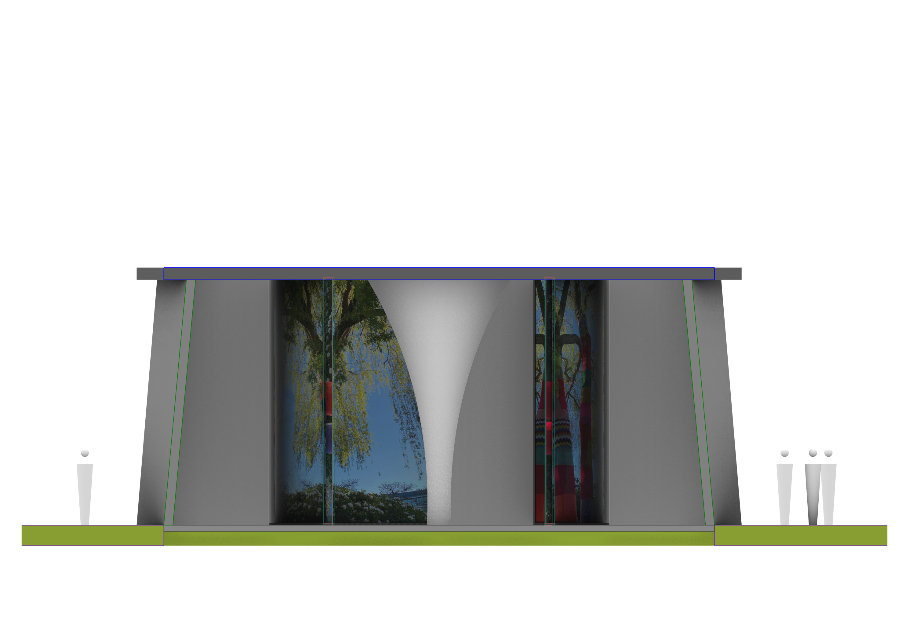
Navigation
Your phone is the remote.
Scan the QR code on the pavilion to open the mobile interface, no app install. From there you can upload a memory of your own, or step into the shared 3D field and move through everyone else's.
Upload: drop in a photo, place it on the map, write a short story, and optionally attach a voice note or a cropped clip of music, then it's rendered into a gaussian-splat scene and added to the field.
Move: a twin on-screen joystick, one to move, one to look around, each tap and drag answered with haptic feedback. Walk close to a memory and linger for a moment and it focuses on its own, no tap needed, and its story and sound come up with it.
Adaptive audio: only the memory you're focused on plays out loud, and it fades in and out continuously with how close you are. Everything else stays quiet in the background as soft, drifting particles until you approach it.
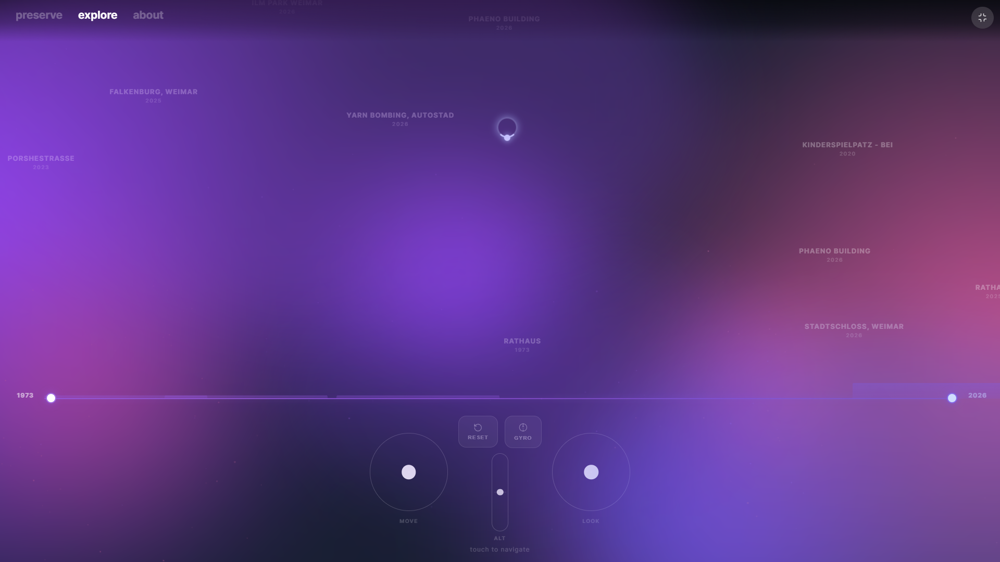
The Physical Mockup
Testing the form before going digital.
A small physical mockup tests the pavilion's shape, scale, and material feel before committing to the final design, the curved walls, the entry sequence, how light moves through the form, and how the space actually feels at human scale.
It also tests the translucent cylinder itself: memories stay visible from inside while softly glowing through to the outside, so passersby catch a hint of what's playing before they step in.
A quick, simple bridge between the concept sketch and the digital pavilion.
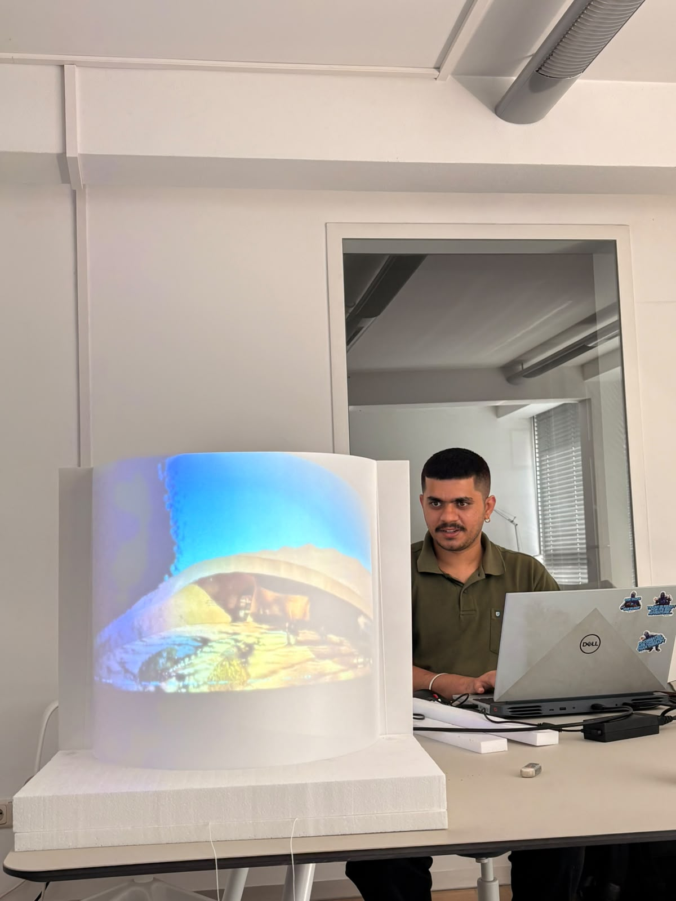
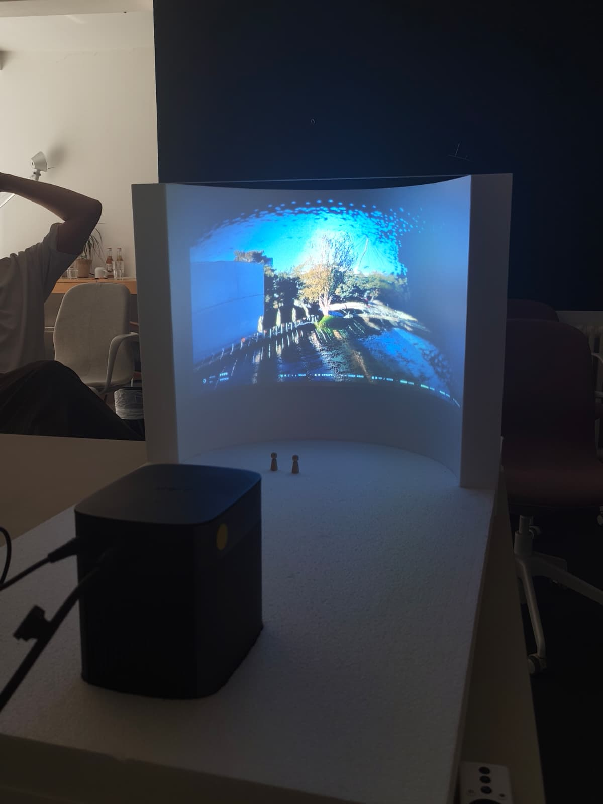
See It Live